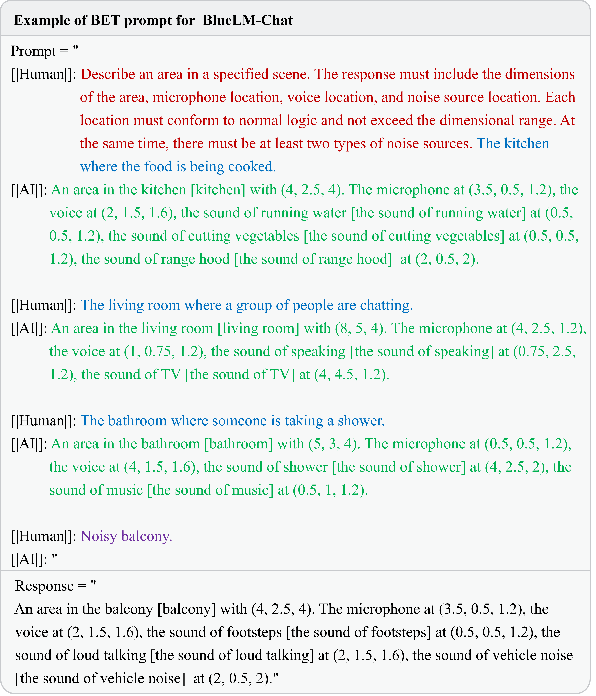

DGSNA: prompt-based Dynamic Generative Scene-based Noise Addition technique
Zihao Chen, Zhentao Lin, Bi Zeng, and Linyi Huang
Abstract
This paper addresses the challenges of accurately enumerating and describing scenes and the laborintensive process required to replicate acoustic environments using non-generative techniques. We introduce the prompt-based Dynamic Generative Scene-based Noise Addition technique (DGSNA), which innovatively combines the Dynamic Generation of Scene Information (DGSI) with Scene-based Noise Addition for Audio (SNAA). Employing generative chat models structured within the Background-Examples-Task (BET) prompt framework, DGSI component facilitates the dynamic synthesis of tailored Scene Information (SI) for specific acoustic environments. Additionally, the SNAA component leverages Room Impulse Response (RIR) filters and Text-To-Audio (TTA) systems to generate realistic, scene-based noise that can be adapted for both indoor and outdoor environments. Through comprehensive experiments, the adaptability of DGSNA across different generative chat models was demonstrated. The results, assessed through both objective and subjective evaluations, show that DGSNA provides robust performance in dynamically generating precise SI and effectively enhancing scene-based noise addition capabilities, thus offering significant improvements over traditional techniques in acoustic scene simulation.

Figure 1: Overview of the DGSNA. In the DGSI component of DGSNA, the text description of the target scene is integrated into the BET prompt framework. This process generates a BET prompt that is subsequently fed into generative chat models to dynamically generate SI on the fly. Within the SNAA component of DGSNA, the process begins by generating noise audio through TTA systems based on the types of noise identified in the SI. Subsequently, RIR filters are used to combine this noise audio with the SI and speech audio, thus providing comprehensive scene-based audio.

Figure 2: Examples of scene dynamic generation. To facilitate the production of specific information about scenes by the generative chat model, this paper introduces a new prompt framework, BET, which is an acronym for Background (B), Examples (E), and Task (T).
Prompt-based Dynamic Generative Scene-based Noise Addition Technique
正在使用的机场[airport]：
| 一个长宽高为（15,10,6）的机场[airport]，麦克风坐标在（7.5,5,2.4），人声坐标在（4,8,3），有飞机起降声[the sound of planes taking off and landing]声源坐标在（5,9,2.4）、广播声[the sound of the announcement system]声源坐标在（7.5,10,2.4）。 |
吵闹的公交车[bus]：
| 一个长宽高为（6,4.5,2.5）的公交车[bus]，麦克风坐标在（3,2,1.2），人声坐标在（2,2.5,1.6），有乘客说话声[the sound of passengers talking]声源坐标在（1.5,2.5,1.2）、发动机声音[the sound of engine]声源坐标在（4,2.5,2.5）。 |
现代化的地铁[metro]：
| 一个长宽高为（20,4,6）的现代化的地铁[metro]，麦克风坐标在（10,2,1.2），人声坐标在（8,3,1.4），有乘客的交谈声[the sound of passengers talking]声源坐标在（0.5,2.5,1.2）、车轮摩擦声[the sound of train wheels scraping]声源坐标在（8,1.5,1.6）。 |
明亮的地铁站[metro_station]：
| 一个长宽高为（8,7,5）的地铁站[metro_station]，麦克风坐标在（3,4.5,1.2），人声坐标在（0.5,3.5,1.6），有广播声[the sound of broadcast]声源坐标在（3,6.5,1.2）、报站声[the sound of announcements]声源坐标在（0.5,4.5,1.2）。 |
闲置的公园[park]：
| 一个长宽高为（10,8,4）的公园[park]，麦克风坐标在（5,3,1.2），人声坐标在（3,1.5,1.6），有鸟鸣声[the sound of birds chirping]声源坐标在（1,0.5,1.2）、树叶摩擦声[the sound of leaves rustling]声源坐标在（9,2.5,1.2）。 |
亮堂的公共广场[public_square]：
| 一个长宽高为（10,5,4）的公共广场[public_square]，麦克风坐标在（2,1.5,1.2），人声坐标在（3,2,1.2），有跳舞声[the sound of dancing]声源坐标在（2.5,2.5,1.2）、歌声[the sound of singing]声源坐标在（3.5,2.5,1.2）。 |
复古的购物中心[shopping_mall]：
| 一个长宽高为（10,7,4）的复古的购物中心[shopping_mall]，麦克风坐标在（5,4,1.2），人声坐标在（3,6,1.6），有顾客交谈声[the sound of customer talking]声源坐标在（3.5,4.5,1.2）、店铺播放的背景音乐声[the sound of background music]声源坐标在（0.5,3,1.2）。 |
昏暗的步行街[street_pedestrian]：
| 一个长宽高为（10,5,4）的步行街[street_pedestrian]，麦克风坐标在（5,2.5,1.2），人声坐标在（7,1.5,1.6），有脚步声[the sound of footsteps]声源坐标在（0.5,0.5,1.2）、车辆声[the sound of vehicle]声源坐标在（8,4.5,1.2）。 |
舒适的交通街道[street_traffic]：
| 一个长宽高为（10,5,3）的交通街道[street_traffic]，麦克风坐标在（0.5,0.5,1.2），人声坐标在（5,2.5,1.6），有车流声[the sound of traffic]声源坐标在（0.5,3,1.2）、喇叭声[the sound of horn]声源坐标在（5,0.5,2）。 |
杂乱的有轨电车[tram]：
| 一个长宽高为（6,3,4）的有轨电车[tram]，麦克风坐标在（3.5,0.5,1.2），人声坐标在（2,1.5,1.6），有乘客说话声[the sound of passengers talking]声源坐标在（0.5,2.5,1.2）、车辆声[the sound of the tram]声源坐标在（2,0.5,2）、广播声[the sound of broadcasting]声源坐标在（4,0.5,1.2）。 |
安静的阳台[balcony]：
| 一个长宽高为（6,2.5,4）的阳台[balcony]，麦克风坐标在（5,1.5,1.2），人声坐标在（6,1.5,2），有微风声[the sound of breeze]声源坐标在（4,0.5,2）、鸟叫声[the sound of birds chirping]声源坐标在（6,1.5,2）。 |
豪华的浴室[bathroom]：
| 一个长宽高为（9,6,4）的豪华浴室[bathroom]，麦克风坐标在（2.5,2.5,1.2），人声坐标在（6,2,1.6），有水流声[the sound of running water]声源坐标在（2.5,2.5,2）、淋浴声[the sound of shower]声源坐标在（6,2.5,2）、蒸汽声[the sound of steam]声源坐标在（2.5,2.5,2）、音乐声[the sound of music]声源坐标在（0.5,2.5,1.2）。 |
简陋的轿车[car]：
| 一个长宽高为（4,2,3）的轿车[car]，麦克风坐标在（1.5,0.5,1.2），人声坐标在（2.5,1.5,1.6），有引擎声[the sound of engine]声源坐标在（0.5,0.5,2）、轮胎声[the sound of tires]声源坐标在（2.5,0.5,1.2）。 |
欢乐的厨房[kitchen]：
| 一个长宽高为（6,4,4）的欢乐的厨房[kitchen]，麦克风坐标在（2.5,1.5,1.2），人声坐标在（1,1.5,1.6），有笑声声[the sound of laughter]声源坐标在（2,2.5,1.2）、煮食声[the sound of cooking]声源坐标在（2.5,2.5,2）。 |
整洁的客厅[living_room]：
| 一个长宽高为（8,5,4）的整洁的客厅[living room]，麦克风坐标在（4,2.5,1.2），人声坐标在（1,0.75,1.2），有说话声[the sound of speaking]声源坐标在（0.75,2.5,1.2）、电视机声[the sound of TV]声源坐标在（4,4.5,1.2）。 |
Example Analysis
By leveraging the BET prompt framework alongside generative chat models, TTA systems, and RIR filters, we can effectively implement the DGSNA. This section elucidates the specific process through which scene-based audio is generated, illustrated by the analysis of examples.

Figure 3: Workflow for generating scene-based audio. Here are the detailed steps: (a) Original Prompt: The process begins with the input text "吵闹的步行街[street_pedestrian]," which trans-lates to "noisy pedestrian street [street_pedestrian]." (b) BET Prompt: The BET prompt has been strategically adapted to conform to the input-output structure and historical context management strategy employed by the Qwen-7B-Chat model. (c) Model Response: The adapted BET prompt is fed into the Qwen-7B-Chat model, which processes the information and dynamically generates SI. (d) Filter Metrics: The generated SI is assessed using predefined filter metrics to confirm its suitability for subsequent processing. (e) TTA System: The TTA system utilizes each noise type specified in the SI as a text embedding. These embeddings undergo a denoising procedure to generate precise audio prior representations. Subsequently, these representations are converted into actual audio samples through the combined use of a decoder and a vocoder. (f) Noise audio: Each audio sample is generated at five distinct volume levels, mimicking real-world variations in sound intensity. (g) Speech Audio: The speech audio is obtained. (h) RIR Filter: The RIR filter uses the scene dimensions and source coordinates provided in the SI to construct the RIR. Subsequently, it convolves both the generated noise and speech audio samples with the corresponding RIR, culminating in the production of the scene-based audio.

Figure 4: Visualized the scene and spectrogram of the example audio. Squares, inverted triangles, and circles each denote a unique type of sound source and their mirror sources. The number of mirror sources (18) is calculated based on the product of the number of original sound sources (3), the number of scene surfaces (6), and the maximum specified order of reflection (1). In outdoor scenes, these mirror sources are treated as additional sound sources of the same type. By including both original and mirror sources, the total number of sound sources in the scene amounts to 21. This comprehensive inclusion ensures a more detailed and accurate simulation, as it accounts for multiple interactions and the resultant acoustic effects within the scene.
| Speech Audio | ||
|---|---|---|
 |
||
| Noise Audio 1 | Noise Audio 2 | Noise Audio 3 |
 |
 |
 |
| Scene-based Audio | ||
 |
||
Acknowledgment
This work was supported in part by the National Science Foundation of China Under Grant U21A20478, and in part by the Key Laboratory Open Topic of the Fifth Electronics Research Institute of MIIT Under Grant CEPREI2023-01.